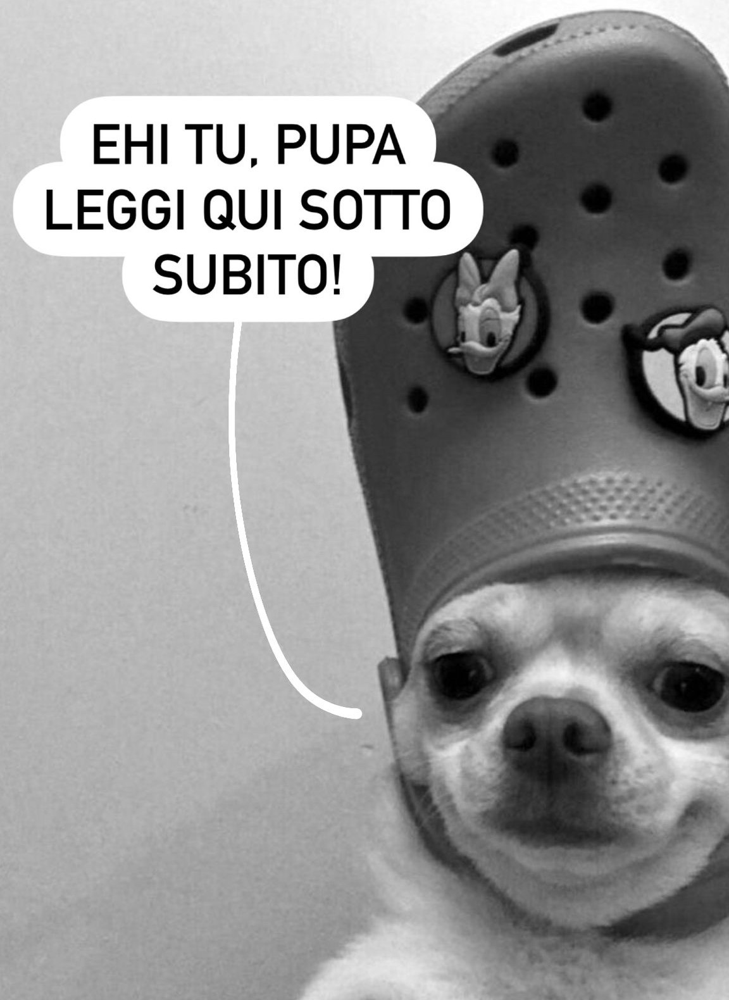

Ciao mia piccola scimmia del Burundi approdata per puro caso in Patagonia e scordata lì dai bracconieri,
la verità è che avevo un pò di timore nel farti questo regalo,
perché non volevo che per te potesse essere troppo o che
io potessi metterti pressione in qualche modo.
Eppure, come al solito, la voglia di farti stare bene ha prevalso, e so che prevarrà sempre quando si tratta di te.
Se ho imparato a conoscerti so a che stai pensando ora:
che forse non avrei dovuto farti questo regalo,
che
ti senti in colpa,
che senti di dover ricambiare in qualche modo,
che non meriti questo,
che mi odi,
che devi cambiare l'acqua di Bombi e Piccoletto,
ma la verità è che dovresti sentirti in dovere di fare solamente UNA di queste cose,
e sappiamo entrambi qual è (
<-- visto come l 'ho scritto bene senza apostrofo? Eheh)
So che magari ti starai chiedendo cosa acciderbolina sia questo sito,
non so se tu ti sia già fatta un'idea, ma credo che ora capirai:
Da quando ci siamo conosciuti,
da quando mi hai parlato di te,
delle tue ansie,
delle tue paure,
di tutto quello che devi affrontare ogni singolo giorno della tua vita,
non ho fatto altro che pensare a qualcosa che ho notato,
qualcosa
a cui forse poche persone hanno fatto caso,
qualcosa che forse anche tu stessa, per abitudine, dai ormai per scontato.
Sto parlando della forza che hai dentro di te, e la cosa che mi ha sempre lasciato sorpreso è che tu sei talmente
abituata ad essere così ogni giorno della tua vita, che neanche ti rendi conto di tutta questa forza assurda.
E io lo vedo, e vedo anche che non ti fermi quasi mai a ricaricare le batterie.
E, cazzo, io con tutto il mio cuore voglio
aiutarti,
voglio alleggerirti,
voglio farti sorridere,
voglio fare in modo di farti stare bene,
di non farti affrontare tutto da sola,
e lo so che non vuoi che io mi prenda carico di qualcosa, ma voglio anche solo darti la mano e
aiutarti a restare a terra con me, per non farti mai risucchiare da quell'uragano,
oppure per attraversarlo assieme e restare anche solo su una nuvola, ma restarci, in ogni caso, con te.
So che ancora non è granché, ma forse è un
inizio, è uno dei miei modi per tenerti la mano in tutto questo, o il dito, si insomma come preferisci tu, anche il naso se vuoi eheh
Ho creato una specie di "DataBase" di frasi che magari potrebbero aiutarti (e altre che volevo semplicemente
dedicarti) anche solo a smorzare quello che devi affrontare ogni giorno, ti basta premere il tasto in alto quante volte vuoi e vedrai da te
So che forse non avrai il tempo di utilizzarlo spesso, ma spero solo che potrà esserti d'aiuto
anche solo per poco, anche solo un minimo, magari in una giornata più triste o ansiosa di altre, spero tanto che ogni volta che deciderai di premere quel bottone, spunterà la frase giusta per te
Sei speciale,
ma non nel modo
scontato,
è solo che la tua anima probabilmente era destinata a un mondo migliore di questo,
così come il tuo cuore
Qui sotto solo un'altra piccola foto per farti sorridere dopo tutto questo eheh: